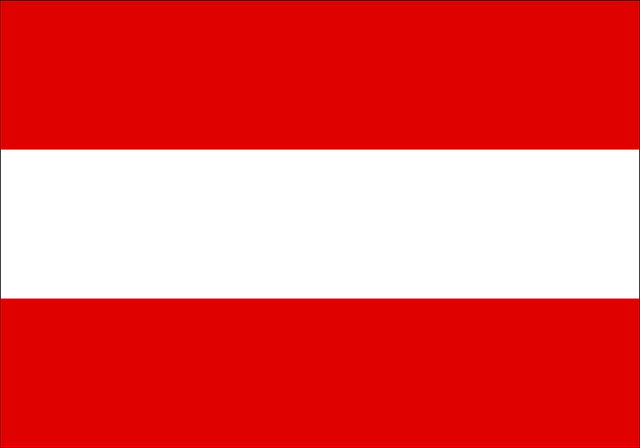

오스트리아 |
|
|  |
현재시간: 시차:8시간 빠름 수도:비엔나 공용어:독일어 인구:약 890만 명 종교:대부분 천주교 전압:220V, 50Hz 통화단위:유로(€)
|
사계절이 있으나, 겨울에 온난한 온대기후입니다.
연평균기온은 7~9℃, 연평균강수량은 700~2,000mm입니다.
최근에는 겨울에 눈이 너무 많이 오는 해와 너무 적게 오는 해가 있어서,
여름이 예전보다 더워지는 등 과거와 다른 기후이상 현상이 나타나고 있습니다.
경찰 112, 133
구급 112, 144
소방 112, 122
아동상담 147
시내 교통기관
전철이나 버스의 정류장 이름은 카를스광장(Karlsplatz) 역, 슈테판플라츠(Stephansplatz) 역 등
주요 지하철역 교통 안내소에서 판매하는 노선도로 확인 가능합니다.
또 일부 버스를 제외한 대부분의 대중교통은 오전 5시부터 자정까지 운행합니다.
지하철역사, 노면전차, 버스는 모두 금연입니다.
비엔나 교통청 사이트에는 길찾기 기능이 있으니 출발지와 목적지를 현지표기대로 지명이나 주소 번호로 검색하면
노선, 시간표 검색을 할 수 있습니다. 비엔나 슈테판플라츠 역에서 쇤브룬궁전 역까지의 시내 노선 검색부터
비엔나 공항에서 잘츠부르크까지 등 오스트리아 각 지방으로 향하는 노선 검색도 가능합니다.
단, 검색하는 지명은 등록된 정류장 이름에 한해서만 선택 가능합니다.
승차권(Fahrschein)
승차권 하나로 지하철, 트램, 버스를 모두 탈수 있고 비엔나 대중교통 100존 이내면 요금이 동일합니다.
여행일정에 따라서는 24시간, 48시간 또는 72시간 동안 비엔나 대중교통을 자유롭게 이용하고
각종 명소 입장 할인 혜택을 받을 수 있는 비엔나 시티 카드도 추천합니다.
모든 승차권은 비엔나시 교통국의 매표소, 담배가게에서 구입할 수 있습니다.
1회권, 24시간권, 48시간권, 72시간권은 지하철역 승차권 자동판매기에서도 판매합니다.
요금, 유효기간, 노선도, 시간표 등 최신 정보는 비엔나 교통국 사이트에서 확인하세요.
이용 방법
대중교통 이용 시, 지하철은 플랫폼 입구에 있는 자동개찰기, 트램이나 버스는 차내에 있는 자동개찰기에
승차권을 넣어 펀칭을 받아야 합니다. 펀칭을 받지 않고 검사원에게 적발되면 벌금을 내야하니 주의하세요.
지하철(U-bahn)
5개의 노선이 있고 5~10분 간격으로 운행합니다.
U1(빨간색): Leopoldau 역←→Oberlaa 역: 시내 중심부를 남북으로 달림.
U2(보라색): Karlsplatz 역←→Seestadt 역: 링 거리의 서쪽을 달림.
U3(주황색): Leopoldau 역←→Reumannplatz 역: 시내 중심부를 동서로 달림. 비엔나 서역을 지나감.
U4(초록색): Heiligenstadt 역←→Hütteldorf 역: 카를스광장이나 쇤브룬 궁전 등을 지나감.
U6(갈색): Floridsdorf 역←→Siebenhirten역: 비엔나 서역(Wien Westbahnhof)을 지나가 시내 남북을 달림.
트램(Strassenbahn)
약 35개의 노선이 있습니다.
관광에 유용한 노선
1번: 프라터 하우프트 알레-슈베덴플라츠-링 거리-비엔나 국립 오페라 극장-슈테판 화딩거 플라츠
2번: 오타크링-비엔나 국립 오페라 극장-링 거리-슈타트파크(시민공원)
-오스트리아 응용미술관(MAK)-슈베덴플라츠-프리드리히 엥겔스 플라츠
D번: 베토벤 산책길-누스도르프-링-벨베데레 궁전-비엔나 중앙역-알프레드 아들러 거리
18번: Burggasse Stadthalle-Schlachthausgasse(서역과 중앙역을 연결함)
37번: 쇼텐토어(U2링 북쪽)-카니시우스가세Canisiusgasse(슈베르트 생가)-Hohewarter(하이리겐슈타트 유서의 집)
38번: 쇼텐토어(U2링 북쪽)-그린칭(호이리게 구역)
71번: 뵈르제(증권 거래소)-캐른트너링/비엔나 국립 오페라 극장-중앙묘지
비엔나 링 트램 (Vienna Ring-Tram)
관광객을 위한 비엔나 링 트램은 비엔나 구시가지를 둘러싸는 링거리 (Ringstrasse)를 한바퀴 도는 트램입니다.
1년 내내 매일 10시부터 18시까지(7, 8월은 19시), 30분 간격으로 운행합니다.
트램 안에서는 화면으로 링 거리의 명소나 핫플레이스가 소개되고 헤드폰을 이용하여 다양한 언어로 설명을 들을 수 있습니다.
전용 티켓이 필요하니 1회권, 24시간권을 따로 구입해서 이용하세요.
비엔나 대중교통 승차권 24시간권에 트램 승차권이 포함된 경우도 있습니다.
버스(Bus)
링거리 안에서 출발하는 버스도 있지만 많은 버스는 트램 종점에서 더 멀리 갑니다.
노선번호는 숫자번호에 A 아니면 B가 붙어있고 완행입니다.
관광에 유용한 노선
38A번: 하일리겐슈타트(U4)-Armbrustergasse-그린칭-칼렌베르크
48A번: 독트로 칼 렌너 링(민중극장)-바움가르트너 회에(슈타인호프 교회)
60B번: Hermesstrasse(헤르메스 거리)-라인츠 티어가르텐(헤르메스빌라 입구)
근거리 열차(S-Bahn, R-Bahn)
S-Bahn과 R-Bahn은 국철 전철로서 각각 11개, 12개 노선이 있습니다.
유용한 노선은 비엔나 미테 역, 마이들링 역을 이용할 수 있는 S1, S2입니다.
S7은 슈베하트에 있는 비엔나 공항에서 비엔나 시내까지 갈 수 있고
비엔나 프란츠요제프 역에서 시작하는 R40은 하일리겐슈타트를 지나가서 크림스까지 갈 수 있습니다.
S1은 비엔나의 남쪽 바덴까지 갈수 있지만 시내 요금이 아니니 주의하세요.
바덴 선(Badnerbahn)
비엔나 시내와 근교 바덴을 연결하는 전철로, 오페라 극장 앞에서 출발하는 푸른색/노란색의 노면전차입니다.
비엔나 남쪽 Vösendorf까지는 시내요금으로 갈수 있습니다.